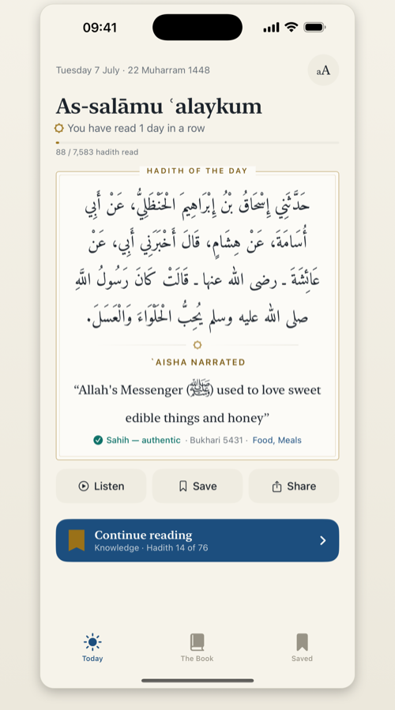
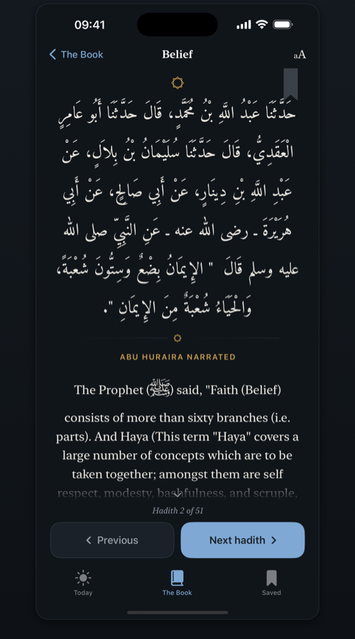
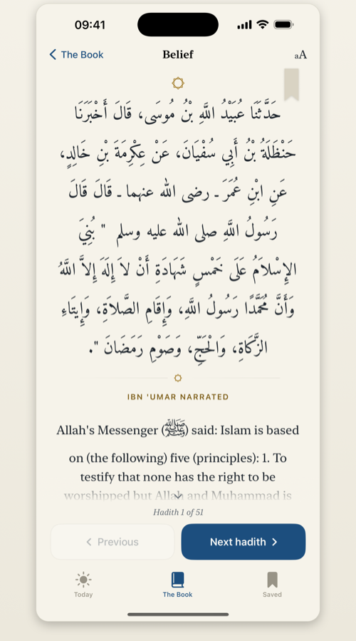
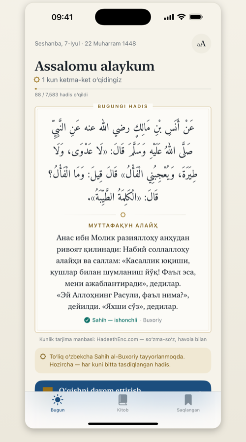

Honoured for nearly twelve centuries as the most authentic book after the Qurʼan — the life’s work of a son of Bukhara.
All 97 books and 7,583 hadith, set like a book you’ll want to open — fully offline, with the story of Imam al-Bukhari, who gave sixteen years to gather it. No ads. No tracking. No sign-up.
Free · iPhone, iPad, Mac & Apple Vision

Not a book of opinions, and not a book of stories — a collection in which every narration met the strictest test its author could devise.
الجامع المسند الصحيح المختصر من أمور رسول الله ﷺ وسننه وأيامه
al-Jāmiʿ al-Musnad al-Ṣaḥīḥ al-Mukhtaṣar min Umūr Rasūl Allāh ﷺ wa-Sunanihi wa-Ayyāmihi
The comprehensive, fully chained, authentic, abridged collection of the affairs of the Messenger of God ﷺ, his practice, and his times — known ever since, simply, as Sahih al-Bukhari.
Every hadith is carried by a chain of trustworthy narrators — each one known, weighed, and shown to have actually met the one he heard from. A stricter bar than any before it.
Of some six hundred thousand narrations he weighed, about one in eighty earned a place — 7,583 hadith, and not one he doubted.
For nearly twelve centuries, Sunni scholarship has honoured it as the most authentic book after the Book of God. The text is presented unaltered — here, and in the app.
Muḥammad ibn Ismāʿīl al-Bukhārī
194–256 AH · 810–870 CE
He was born in Bukhara, in present-day Uzbekistan, and lost his father in infancy, growing up in his mother’s care. It is related that he lost his sight as a child — and that God restored it through her constant supplication.
At sixteen he set out for Mecca on pilgrimage with his mother and brother — and when they returned home, he stayed behind to study.
For many years he journeyed — the Hejaz, Iraq, Syria, Egypt, the cities of Khurasan — receiving hadith from more than a thousand teachers.
The story is famous: the city’s scholars recited a hundred traditions with their chains deliberately confounded — and he restored every one to its rightful place, from a single hearing.
From some six hundred thousand narrations he had gathered, over sixteen years he chose only those he was certain were sound — bathing and praying, it is told, before he set down each one. What remained he called al-Jāmiʿ al-Ṣaḥīḥ.
Driven from Bukhara for refusing to carry knowledge to a ruler’s door, he withdrew to the village of Khartank near Samarkand, and passed away on the night of Eid al-Fitr. His mausoleum stands there to this day — a place of visitation from across the world.
From Bukhara to Samarkand — a life given wholly to preserving the words of the Prophet ﷺ.
His scribe recalled that the Imam would rise many times in a night, light his lamp, and set down what he feared to forget.
The app keeps the habit: a warm night theme for late reading and quiet mornings — the same page, dimmed to candlelight. Nothing glares; nothing pulls you away.

Every narration set like a page worth keeping — the Arabic in Amiri, a clear translation beneath, the narrator named, the grade shown. Turn page by page or read in one continuous scroll.

All 97 books, arranged into thirteen plain-language sections — so you always know where you are in the book. Find your place at a glance, then read page by page.
The verified Arabic text at the centre, with translations alongside — and an interface that speaks your language. Uzbek comes first: a fully localized experience today, with the complete Uzbek translation in careful preparation.

Questions, feedback, or something that looks wrong in the app — a hadith, the Arabic, a translation, or the reading experience? Please get in touch. Every message is read, and accuracy reports are taken seriously.
Sahih al-Bukhari is built to collect nothing and track nothing. It works fully offline.
Because no personal data is collected, there is nothing to request, export, or delete from us. Removing the app removes all of its data from your device. If this policy changes, the updated version will be posted on this page.